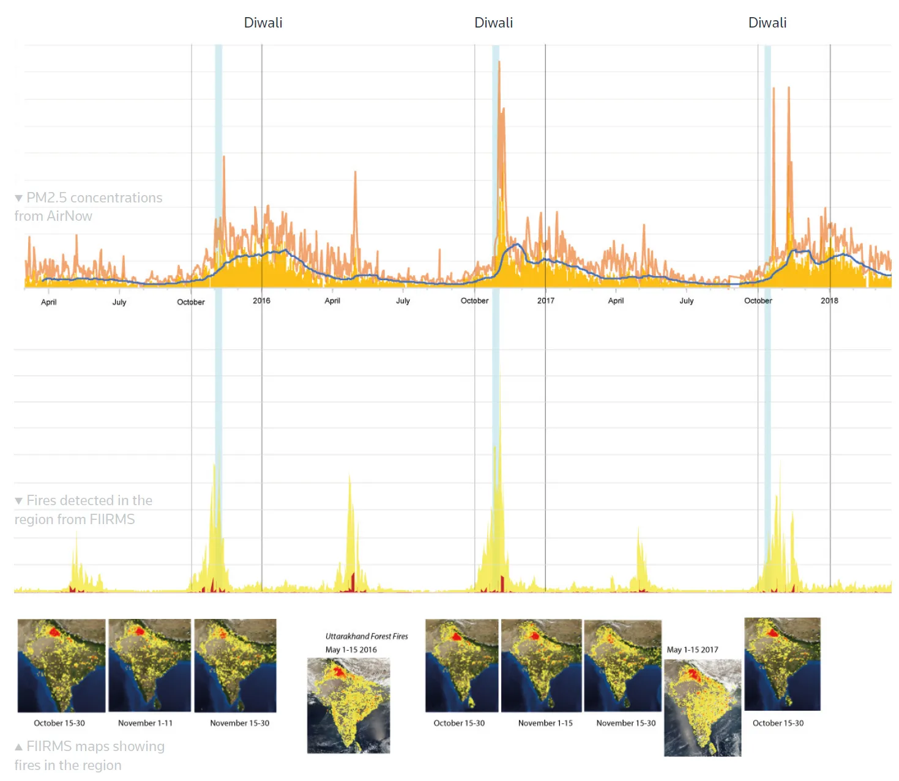
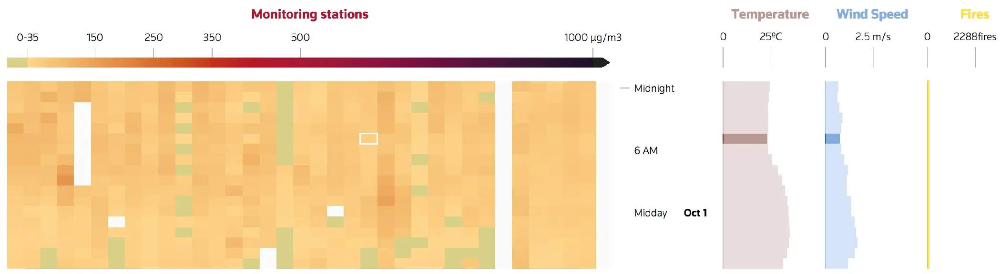

Air pollution in north India
Each year, from late October, a thick blanket of smog settles over vast swathes of northern India, including the capital, New Delhi, pushing air pollution levels off the charts.
I worked on this for my Master's graduation project that looks at the causes, severity and extent of the systemic problem using data collected from air quality monitors, satellite imagery from NASA and photographic evidence.
Creative brief
Delhi’s deteriorating air quality in the cold season was not a new phenomenon and had already been widely reported on. However, we wanted to investigate the nuances through the lens of data and explore storytelling ideas for explaining them to the mass audience, as a means of creating awareness before the upcoming cold season by developing interactive visuals for the same.
Investigate the conjecture that the quality of air in north India deteriorates during the cold season.
Identify patterns and come up with conclusive evidence to explain Delhi air pollution.
Use visual methods to explain the facts that can help create awareness and start conversations in the right direction.
Research and analysis
We were familiar with the most common causes that the increased air pollution were attributed to — crop stubble burning in the neighbouring states and burning of firecrackers during the festival of Diwali. After a brief reading on how to best quantify air quality, we sourced some data for particulate pollutants in the city and plotted along with the stubble burning data.


Design solution
The timing of the project, when it started — September 2018, was quite appropriate to study the air quality crisis in Delhi thoroughly as it could be substantiated with data from coming months. We, a team comprising Rajshree Deshmukh, Gurman Bhatia and Simon Scarr began ideating on project angles which can be summarised as —
Elaborate the reasons behind the air quality crisis using explainer graphic using 2017 evidence, and a primer of what may happen in 2018. See Project
Show qualitatively/quantitatively the impact of Diwali firecrackers, stubble burning and the meteorological factors on air pollution. See Project
Show visually, how bad Delhi’s air can get in winter. Get photos/videos; do some experiment to see the particulate pollutants. See Project
Making air quality maps
Using monthly data of Aerosol Optical Thickness and Visible Infrared Imaging Radiometer Suite (VIIRS) 375 m active fire product from NASA, I created the maps on QGIS.


Visualising Delhi’s air quality
At this point in the project, the attempt was to take a look at the PM2.5 levels across various regions of the city of Delhi, because the pollution levels are not uniform across the city and can vary with the time of the day as well.
Using PM2.5 concentrations data at Continuous Air Quality Monitoring Stations (CAAQM) in Delhi from Central Pollution Control Board, I wanted to look at how the air quality varies geographically within the city and is affected by factors like wind, temperature, stubble burning and Diwali celebrations.

Using the heat map as a starting point, the time period of observations was expanded to include the whole of October 2018 and the few days of November, later to be expanded to the end of the month.


The outcome of the projects were visual stories published by Reuters. The detailed process is documented in my graduation document which you can navigate through by manually turning the pages at the curl using the mouse or using the ← and → keys. To peek into a section of a page click on the section to zoom in and out of it. You can also zoom out of a view using the Esc key.
The high-resolution images may take a while to load upon zoom, depending upon your internet speed.
The project was also featured on Lines of Inquiry, the Annual Design Show at the National Institute of Design, Ahmedabad, India in March 2020.